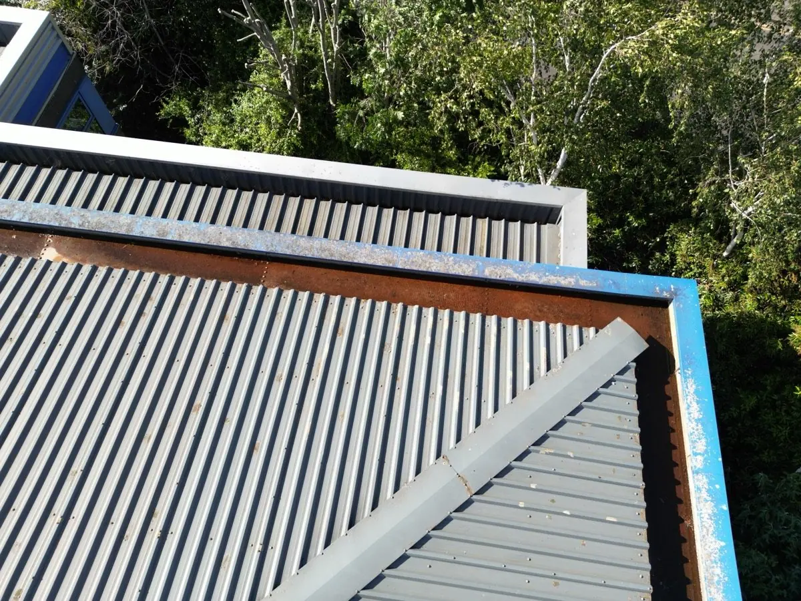

F1 · Edge trim & gutter, cut-edge corrosion & debris
Pass 03 · PerimeterREFERObservation: cut-edge corrosion to the edge trim of the profiled metal sheeting at the corner junction, with breakdown of the sacrificial coating and surface (red) oxidation tracking along the drip edge into the gutter run. Debris and organic matter are collecting in the gutter sole at the low point, restricting free discharge to the outlet. No perforation of the trim is resolvable at capture resolution.
Recommendation: refer to your roofing contractor. Clearing the gutter run to restore drainage and treating the cut-edge corrosion while it remains superficial is routine maintenance; left standing, trapped water accelerates corrosion of the trim and gutter and progresses to perforation, water ingress and eventual trim and gutter replacement. These frames are sharp enough to scope both the clearance and the repair before anyone quotes for access.